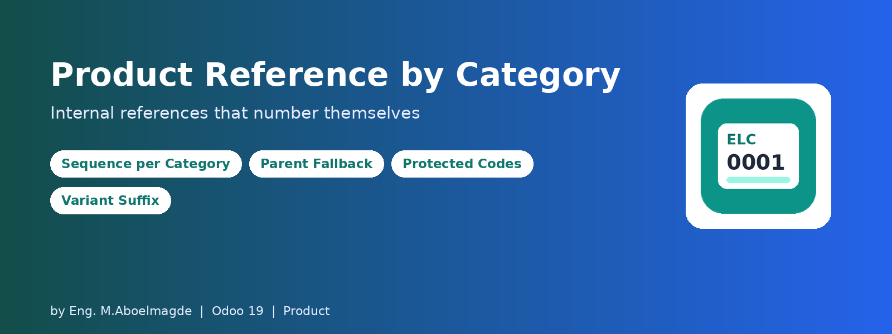
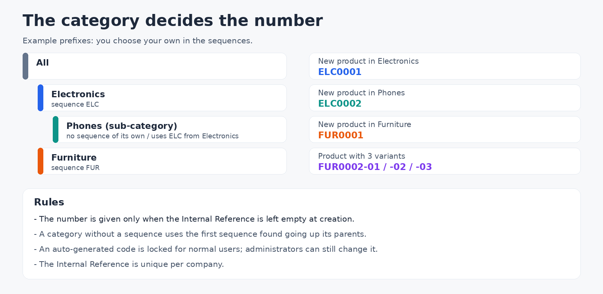
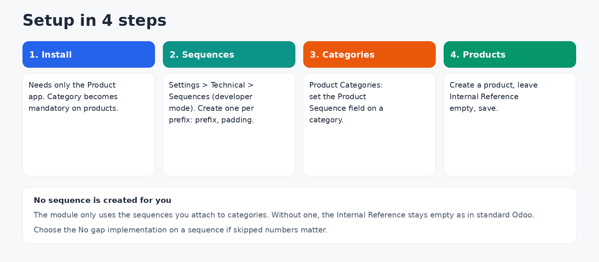

Internal references that number themselves, by category
Typing product codes by hand leads to duplicates, gaps and codes that follow no rule. With this module each product category gets its own sequence. Create a product, leave the Internal Reference empty, and it receives the next number of its category (for example ELC0001, ELC0002 for Electronics and FUR0001 for Furniture). Imports and API calls get the same behavior, because it runs when the product is created.
How it works

- Product Sequence field on the product category form and list. The prefixes and number format are whatever you define in the sequence.
- Parent fallback: a category without its own sequence uses the first sequence found going up its parent categories. Configure a top-level category once and all its sub-categories follow, unless one overrides it.
- Only when empty: if you type a reference yourself, it is kept as typed.
- Category required: the product category becomes mandatory on the product form and in the model, so a product can never be created without one.
- Protected codes: once generated automatically, a reference cannot be changed by normal users, who get a clear message. Administrators (the Settings group) can still override it.
- Variants: when a product ends up with more than one variant, each variant that still carries the template's generated code gets a numbered suffix (-01, -02 and so on). Variants with a code of their own are untouched.
- Unique per company: two products of the same company cannot share an Internal Reference.
Configuration guide

Step 1: Install
The module needs only the Product app (it also works with Inventory and Sales). There are no settings screens and no extra libraries. It does not create any sequence for you: it uses the ones you attach to categories.
Step 2: Create the sequences
Activate developer mode, then open Settings > Technical > Sequences and create one sequence per prefix you need. Give it a name, a Prefix (for example ELC), a Sequence Size (padding) and a first number. Choose the No gap implementation if you do not want skipped numbers.
Step 3: Attach them to categories
Open the Product Categories list (Inventory or Sales, Configuration menu), open a category and fill Product Sequence. Leave it empty on sub-categories that should use their parent's sequence.
Step 4: Create products
Create a product, choose its category, leave the Internal Reference empty and save. The code appears right after saving.
Who can do what
| Action | Who |
|---|
| Create products and receive automatic references | Every user who can create products |
| Set the Product Sequence on a category | Users who can edit product categories |
| Create and edit sequences | Administrators (Technical settings) |
| Change an automatically generated reference | Administrators only |
Good to know
- Existing products are not renumbered. Only products created after the module is installed get a generated code.
- Install on an existing database: all products must already have a category and no two products of one company may share an Internal Reference, otherwise the installation stops. Clean the data first.
- A category with no sequence anywhere in its parent chain leaves the Internal Reference empty, as in standard Odoo.
- Variant suffixes are applied when variants are created. Check the result with your own attribute setup before relying on it in production.
Technical details
- Odoo 19.0, Community and Enterprise. Depends only on product.
- License: Odoo Proprietary License v1.0 (OPL-1).
- Adds a sequence field to product.category and extends product.template and product.product.
Frequently asked questions
My product has no reference. Its category (and every parent category) has no Product Sequence, or you typed a reference yourself.
Why can't I edit the reference? It was generated automatically and is locked for normal users. Ask an administrator.
Can two categories share the same sequence? Yes. Both then draw from the same numbering.
Support
Bug-fix updates are included. Installation, configuration and customization support: Eng. M.Aboelmagde (YouTube: Odoo Lab, @odoolab).